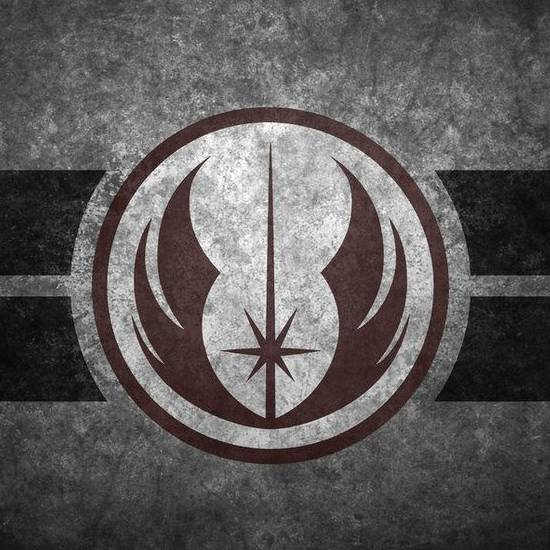

Chamber of Commerce Coruscant
Target Audience
- Members of the galaxy who fall under the Capital of Coruscant
- Old Wise Jedi apart of the council
- Has been around coruscant for a long time, knows what is happening around town
- Intoduces new topics of conversation
- Young upcoming Jedi
- Potential members for the Jedi council
- Suggest things that could improve
Scenarios
- An old Jedi looking at what is happening around town
- A young Jedi looking at how to be apart of the commerce
- Members of the community wondering what is being talked about in commerce
- People of the Galaxy who will be on coruscant in the near future
- People in the Galaxy wondering what the commerce is doing to help the Galaxy